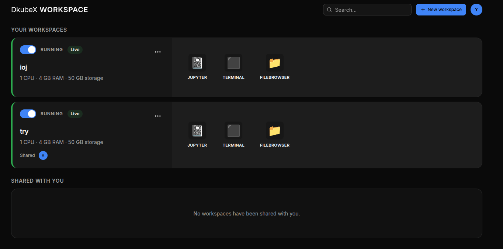
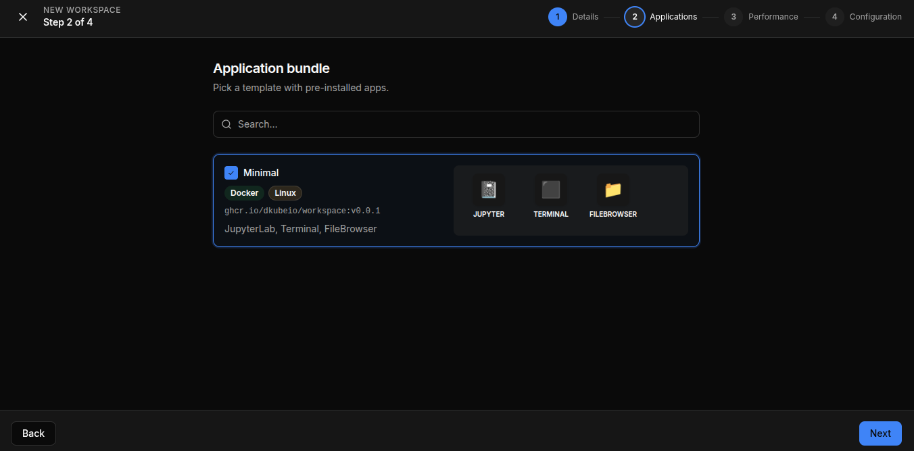
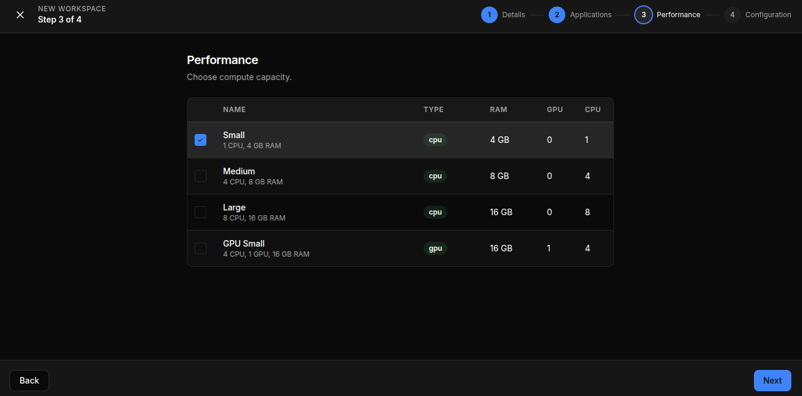

Getting Started¶
DKubeX Workspace gives you a personal, on-demand development environment running in the cluster. This guide covers logging in, finding your way around the Home dashboard, and creating your first workspace.
Logging In¶
DKubeX Workspace uses your organization’s single sign-on (SSO). Navigate to the app URL and you are logged in automatically with your existing credentials — no separate account or password needed.
Home Dashboard¶
After logging in, the Home page is your central hub. It shows two sections:
Your Workspaces — workspaces you own
Shared with You — workspaces others have shared with you

Each workspace card shows its name, current status, resource configuration, and quick-action buttons. Use the search bar at the top to filter by name, description, or owner.
Creating a Workspace¶
The new workspace wizard walks you through four steps:
Step 1 — Details: Click New Workspace (or + New workspace) on the Home page, then enter a name for your workspace.
Step 2 — Applications: Pick an application bundle — a template that determines which apps come pre-installed (e.g., the Minimal bundle includes JupyterLab, Terminal, and FileBrowser).

Step 3 — Performance: Choose a compute profile that sets the CPU, GPU, and RAM allocated to your workspace.

Profile |
CPU |
RAM |
GPU |
|---|---|---|---|
Small |
1 |
4 GB |
0 |
Medium |
4 |
8 GB |
0 |
Large |
8 |
16 GB |
0 |
GPU Small |
4 |
16 GB |
1 |
Step 4 — Configuration: Review and confirm any final settings, then click Create.
The workspace card will appear on the Home page with a Creating status. Once the pod is ready, the status changes to Running.
Tip: Start with a smaller compute profile and scale up later — you can edit resource settings without losing your data.
Next Steps¶
Learn the full workspace lifecycle — statuses, start/stop, archive, and delete.
See how to use apps, manage files, and share your workspace.
Follow an end-to-end workflow.